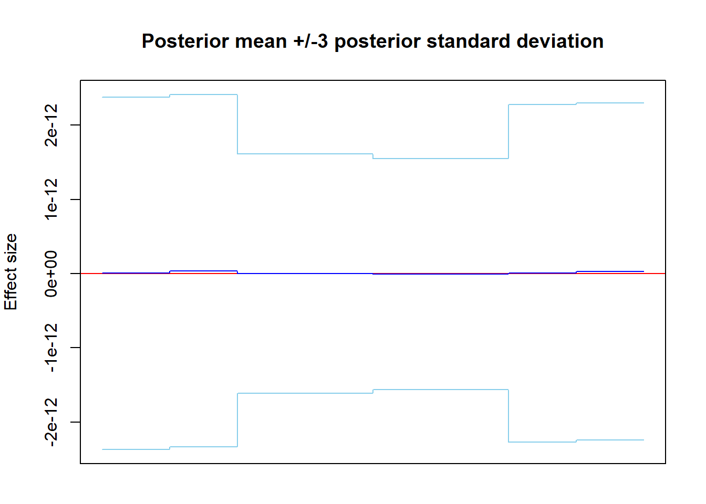

sim3_hmt_benefits
Brendan Law
14/08/2019
WaveQTL_HMT vs WaveQTL
The idea is that the benefits will come from being able to detect signals which are not necessarily strong, and not necessarily broad, but relatively localised. These sorts of signals won’t be captured by WaveQTL as they may be ‘split’ or ‘spread’ across a particular scale, and not propagate strongly enough to lower scales. (???)
Perhaps see Shim and Stephens figures for some examples. Perhaps some of that matter around the middle of Figure 4 may be able to be better captured using a HMT prior. There is potentially some difference between groups here, but very narrow, inconsistent, and seemingly very spiky signal.
Read in phenotype (sequencing count) data
Here is just a sample codebase. We’re working off the data in the WaveQTL git repo – DNase-seq data at chr17.10160989.10162012 and genotypes at 24 SNPs in 2kb cis-candidate region on 70 individuals.
pheno.dat = as.matrix(read.table(paste0(input_data_path, "chr17.10160989.10162012.pheno.dat")))
dim(pheno.dat)## [1] 70 1024#[1] 70 1024
### Is this useful at all? For later on
## read library read depth
library.read.depth = scan(paste0(input_data_path, "library.read.depth.dat"))
length(library.read.depth)## [1] 70## read Covariates
Covariates = as.matrix(read.table(paste0(input_data_path, "PC4.dat")))Now, summarise the counts, and average:
# Count summation
seq_sum <- apply(pheno.dat,MARGIN = 2,sum)
# Count average
seq_avg <- apply(pheno.dat,MARGIN = 2,mean)These are very small counts over 70 individuals (like 0 - 25).
Simulate effect sizes and effect locations.
What we now need is, for each base, \(b = 1,\dots,1024\), the estimated (data-space) effect size, as well as the locations where there are effects. A lot of this work was done in ‘sim1_waveqtl_hmt_gamma_phi.Rmd’. So what i’ll do (for now) is just drop the code in to get an example output for the 11th SNP/genotype, as was done in that markdown.
To do:
- Extend out the effect size simulation script, so can run on all SNPs
- So can estimate effect sizes and locations for all SNPs in our sample dataset
Running the following code chunk should do everything required to get the simulations.
Just to verify that we get something similar, here are some plots:
Plots in WaveQTL style:
Looks about right. Most importantly, we have mean effect sizes, and the locations where we have effects:
# Base-level effect sizes:
length(sample_mean)## [1] 1024# Locations of effects:
length(col_posi)## [1] 144Simulate realistic effect size
Does it matter if the magnitude of the effect is positive, or negative? Need to find a way to keep the p’s between 0 and 1.
Generate effect sizes, and corresponding probabilities
p1_vector <- 2/70 * (1/(1 + sample_mean))
p2_vector <- 2/70 * (sample_mean/(1 + sample_mean))
par(mar = c(2,4,4,2))
plot(1,1,type="n"
, xlab = "position"
, ylab = "p parameter"
, ylim=c(min(min(p1_vector),min(p2_vector)) * 0.5, max(max(p1_vector),max(p2_vector)) * 1.5)
, xlim=c(1, 1024)
, main ="Simulation - p1 (null) vs p2 (alt) parameters"
, axes=FALSE)
axis(2)
axis(1, at = c(1,seq(128,1024,128)))
abline(h = 0, col = "red")
lines(p1_vector, col = "blue")
lines(p2_vector, col = "blue")
box()plot(p1_vector, type = "l")plot(p2_vector, type = "l")For now, the effect size is a bit weird (has positives and negatives), so just use this for now as a toy example:
new_sample_mean <- abs(sample_mean*10e10)
p1_vector <- 2/70 * (1/(1 + abs(new_sample_mean)))
p2_vector <- 2/70 * (abs(new_sample_mean)/(1 + abs(new_sample_mean)))
par(mar = c(2,4,4,2))
plot(1,1,type="n"
, xlab = "position"
, ylab = "p parameter"
, ylim=c(min(min(p1_vector),min(p2_vector)) * 0.5, max(max(p1_vector),max(p2_vector)) * 1.5)
, xlim=c(1, 1024)
, main ="Simulation - p1 (null) vs p2 (alt) parameters"
, axes=FALSE)
axis(2)
axis(1, at = c(1,seq(128,1024,128)))
abline(h = 0, col = "red")
lines(p1_vector, col = "blue")
lines(p2_vector, col = "blue")
box()Issues to deal with:
- effect sizes changing signs (some positive, some negative)
- the really small magnitude of the effect sizes (ie. 10e-13)
- Sum of counts at some bases are fractional – how to deal with this? Do we just round?
Set up beta-binomial distribution:
library(rmutil) # for beta-binomial distirbution##
## Attaching package: 'rmutil'## The following object is masked from 'package:stats':
##
## nobs## The following objects are masked from 'package:base':
##
## as.data.frame, unitsover_disp_mult <- 70
p1_alpha <- over_disp_mult*p1_vector
p1_beta <- over_disp_mult - p1_alpha
p2_alpha <- over_disp_mult*p2_vector
p2_beta <- over_disp_mult - p2_alpha
# Check to see that these alphas and betas generate the desired probabilities
all.equal(p1_vector, p1_alpha/(p1_alpha + p1_beta))## [1] TRUEall.equal(p2_vector, p2_alpha/(p2_alpha + p2_beta))## [1] TRUESimulate realistic effect lengths
For example, let’s do effect length 5, 10, and 50.
I want to generate the effects such that they affect consecutive bases (for now), so i’ll randomly pick out a base from the effect area, and create an effect which is centred around that base.
There’s a slight issue: this might mean that the effect ‘windows’ we generate go outside the actual effect area of the actual data. I won’t worry about this for now, as I just want some comparison for performance of algorithms at different effect lengths. Ideas to work around this:
- Restrict where I can pick the start from, to make sure the windows are contained within the actual effect windows
- This would require me to ‘cluster’ my effects together, so i have well defined start and end points of each effect window
I’ve currently got a lucky seed below which gets me a 50 length window, but this won’t always be the case. I suspect that when I do sims, i’ll opt out of this requirement, and figure it out later.
set.seed(6) # Hey look, a lucky seed which gets me a 50 sized window which works!
# Binary dataset - 1/0 for effect/no effect
effect_ind <- rep(0,1024)
effect_ind[col_posi] <- 1
# Length 5
effect_5_start <- sample(col_posi,size = 1)
# effect_5 <- (effect_5_start-2):(effect_5_start+2)
effect_5 <- intersect((effect_5_start-2):(effect_5_start+2),col_posi)
# Length 10
effect_10_start <- sample(col_posi,size = 1)
# effect_10 <- (effect_10_start-4):(effect_10_start+5)
effect_10 <- intersect((effect_10_start-4):(effect_10_start+5),col_posi)
# Length 50
effect_50_start <- sample(col_posi,size = 1)
# effect_50 <- (effect_50_start-24):(effect_50_start+25)
effect_50 <- intersect((effect_50_start-24):(effect_50_start+25),col_posi)Combine the two to create simulations
Have a 1024 length vector where we know:
- Which bases we want an effect for
- The total sequence counts (# of trials) at each base
- The probability parameter which governs the sequencing count at each base, to mimic the ‘effect size’
Then, we need to process the data, run it through WaveQTL and WaveQTL_HMT, and analyse the results – ie replicate the effect size plots. Along the way, we should also visualise the null and alternative datasets we’ve generated.
Just a note about the ‘rmutil::rbetabinom’ function – the parameterisation is different.
Sometimes, we denote: \[\begin{align*} X &\sim Beta-Binomial(n,\alpha,\beta) \\ \Rightarrow P(X = k) &= \binom{n}{k}\frac{B(k + \alpha, n - k + \beta)}{B(\alpha, \beta)} \end{align*}\] where \(B(a,b) = \frac{\Gamma(a)\Gamma(b)}{\Gamma(a+b)}\) is the beta function. An alternative parameterisation, as per rbetabinom, is to use two parameters, \(m\), a probability (corresponding to the \(p = \frac{\alpha}{\alpha + \beta}\) of the original), and \(s\), an overdispersion parameter. In this representation, we have: \[\begin{align*} X &\sim Beta-Binomial(n,m,s) \\ \Rightarrow P(X = k) &= \binom{n}{k}\frac{B(k + sm, n - k + s(1-m))}{B(sm, s(1-m))} \end{align*}\] This corresponds to: \[\begin{align*} \alpha &= sm \\ \beta &= s(1-m) \\ \therefore m &= \frac{\alpha}{\alpha + \beta} \\ \therefore s &= \alpha + \beta \end{align*}\]
We need to generate null and alternative samples. We want to create 70 x 1024 matrices – 70 individuals, 1024 bases. We fill out each column of our matrix by taking 70 samples from a beta-binomial to populate each column. Our beta binomial does the ‘total count at base b’ number of trials, but the parameters have the ‘divide by 70’ inbuilt, so the proportion of any one individual having a count is very low. The mean count for each column corresponds to around sum of counts divide by 70, which is the desired mean (sample mean of counts).
Length 50 sample – generate both null and alt.
set.seed(6)
# Null
# Alternatively, do column-wise
null_data_50 <- matrix(nrow = 70,ncol = 1024)
for(i in 1:1024){
null_data_50[,i] <- rmutil::rbetabinom(n = 70, size = ceiling(seq_sum[i]), m = (p1_alpha/(p1_alpha+p1_beta))[i]
, s = (p1_alpha+p1_beta)[i])
}
# Alt
# Params should be p1, except where there is an effect.
effect50_alpha <- p1_alpha
effect50_alpha[effect_50] <- p2_alpha[effect_50]
effect50_beta <- p1_beta
effect50_beta[effect_50] <- p2_beta[effect_50]
alt_data_50 <- matrix(nrow = 70,ncol = 1024)
for(i in 1:1024){
alt_data_50[,i] <- rmutil::rbetabinom(n = 70, size = ceiling(seq_sum[i])
, m = (effect50_alpha/(effect50_alpha+effect50_beta))[i]
, s = (effect50_alpha+effect50_beta)[i])
}Plot the average of the two together?
null_data_50_avg <- apply(null_data_50,2,sum)
alt_data_50_avg <- apply(alt_data_50,2,sum)
plt_rng_y <- c(min(min(null_data_50_avg),min(alt_data_50_avg)) * 0.5, max(max(null_data_50_avg),max(alt_data_50_avg)) * 1.5)
par(mfrow = c(3,1),mar = c(2,4,4,1))
plot(1,1,type="n"
, xlab = "position"
, ylab = "count"
, ylim=plt_rng_y
, xlim=c(1, 1024)
, main ="Simulation - null vs alt datasets - effect of length 50"
, axes=FALSE)
axis(2)
axis(1, at = c(1,seq(128,1024,128)))
if(length(effect_50) > 0){
for(j in 1:length(effect_50)){
polygon(c(effect_50[j]-0.5, effect_50[j]-0.5, effect_50[j]+0.5, effect_50[j]+0.5), c(plt_rng_y[1], plt_rng_y[2], plt_rng_y[1], plt_rng_y[2]), col ="pink", border = NA)
}
}
lines(null_data_50_avg, col = "blue", lty = "dashed")
lines(alt_data_50_avg, col = "red", lty = "dashed")
box()
plot(1,1,type="n"
, xlab = "position"
, ylab = "count"
, ylim=plt_rng_y
, xlim=c(1, 1024)
, main ="Simulation - null dataset - effect of length 50"
, axes=FALSE)
axis(2)
axis(1, at = c(1,seq(128,1024,128)))
lines(null_data_50_avg, col = "blue", lty = "dashed")
box()
plot(1,1,type="n"
, xlab = "position"
, ylab = "count"
, ylim=plt_rng_y
, xlim=c(1, 1024)
, main ="Simulation - alt dataset - effect of length 50"
, axes=FALSE)
axis(2)
axis(1, at = c(1,seq(128,1024,128)))
if(length(effect_50) > 0){
for(j in 1:length(effect_50)){
polygon(c(effect_50[j]-0.5, effect_50[j]-0.5, effect_50[j]+0.5, effect_50[j]+0.5), c(plt_rng_y[1], plt_rng_y[2], plt_rng_y[1], plt_rng_y[2]), col ="pink", border = NA)
}
}
lines(alt_data_50_avg, col = "red", lty = "dashed")
box()Run a sample analyses
- Clean both Null and Alt data through WC transform R thingy
- Do we do all the usual bells and whistles (PCA regression, quantile transforms?)
- What tying level?
- Same set of covariates, right?
- Null data through WaveQTL and WaveQTL_HMT
- Alt data through WaveQTL and WaveQTL_HMT
The cleaning functionality, functionalised up. See ‘code/WaveQTL/R/WaveQTL_preprocess_example.R’ for details of where all this came from.
Cleaning the Null dataset:
wavelet_cleaning_wrapper_function(pheno.dat = null_data_50
,output.path = "~/Cpp/WaveQTL_HMT/test/dsQTL/sims/length_50/null_data/"
,library.read.depth = library.read.depth
,Covariates = Covariates)## Loading required package: wavethresh## Warning: package 'wavethresh' was built under R version 3.5.3## Loading required package: MASS## Warning: package 'MASS' was built under R version 3.5.3## WaveThresh: R wavelet software, release 4.6.8, installed## Copyright Guy Nason and others 1993-2016## Note: nlevels has been renamed to nlevelsWT##
## Attaching package: 'wavethresh'## The following object is masked from 'package:rmutil':
##
## wrCleaning the Alt dataset:
wavelet_cleaning_wrapper_function(pheno.dat = alt_data_50
,output.path = "~/Cpp/WaveQTL_HMT/test/dsQTL/sims/length_50/alt_data/"
,library.read.depth = library.read.depth
,Covariates = Covariates)SHOULD WE ONLY NEED THE NON-QT version for effect sizes? The QT version is for likelihood/association testing - is this something we’re going to be interested in also? Or just ability to identify effects at certain locations?
Run null dataset
Run through WaveQTL:
Run through WaveQTL_HMT:
Run alt dataset
Run through WaveQTL:
Run through WaveQTL_HMT:
Analysis - no HMT
Quick effect size analysis and plotting. No_HMT is easy. Read in some more pre-requisite data (like the inverse wavelet transform):
## We'll look at effect size of 11th SNP in genotype file
sel_geno_IX = 11
##### Null
null_50_data_path = "~/Cpp/WaveQTL_HMT/test/dsQTL/output/"
null_50_data_prefix = "sim3_noQT_null"
null_50 <- no_hmt_effect_size(data_path = null_50_data_path
,data_prefix = null_50_data_prefix
,Wmat_1024 = Wmat_1024
,W2mat_1024 = W2mat_1024
,sel_geno_IX = 1)
##### Alt
alt_50_data_path = "~/Cpp/WaveQTL_HMT/test/dsQTL/output/"
alt_50_data_prefix = "sim3_noQT_alt"
alt_50 <- no_hmt_effect_size(data_path = alt_50_data_path
,data_prefix = alt_50_data_prefix
,Wmat_1024 = Wmat_1024
,W2mat_1024 = W2mat_1024
,sel_geno_IX = 1)Analysis - with HMT
Functionalise it up
##### Null
null_50_data_path = "~/Cpp/WaveQTL_HMT/test/dsQTL/output/"
null_50_data_prefix = "sim3_noQT_null"
null_50_hmt <- with_hmt_effect_size(data_path = null_50_data_path
,dataset = paste0(null_50_data_prefix,"_HMT")
,waveqtl_dataset = null_50_data_prefix
,Wmat_1024 = Wmat_1024
,geno_select = 1)
##### Alt
alt_50_data_path = "~/Cpp/WaveQTL_HMT/test/dsQTL/output/"
alt_50_data_prefix = "sim3_noQT_alt"
alt_50_hmt <- with_hmt_effect_size(data_path = alt_50_data_path
,dataset = paste0(alt_50_data_prefix,"_HMT")
,waveqtl_dataset = alt_50_data_prefix
,Wmat_1024 = Wmat_1024
,geno_select = 1)Ad hoc plots
Two final comparisons, by plot:
Null case:
Alt case: